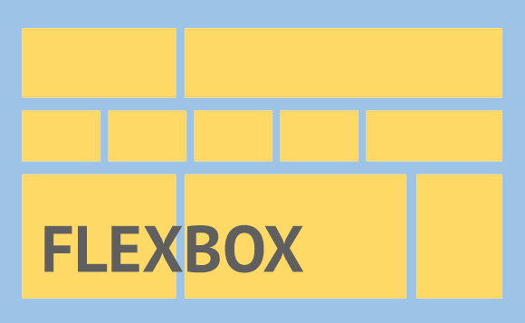
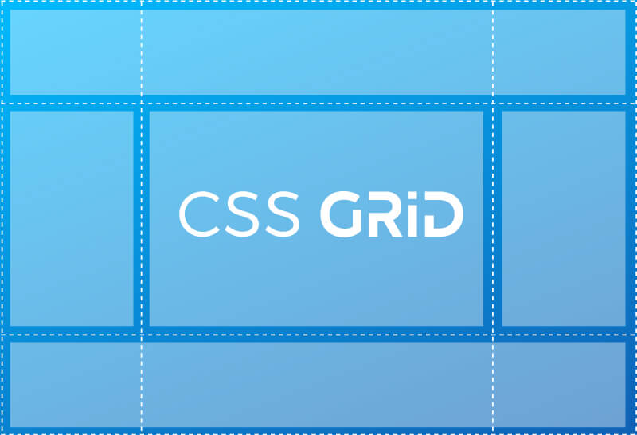

Flex Box
Diseño de Caja Flexible, comúnmente conocido como Flexbox, es un modelo de diseño CSS3.
Está en la etapa de recomendación de candidatos (CR) del W3C La disposición de flexbox permite que los elementos adaptables
dentro de un contenedor se organicen automáticamente dependiendo del tamaño de la pantalla o del dispositivo.
Recuperado de wikipedia

CSS Grid
CSS grid layout o CSS grid es una técnica de las Hojas de Estilo en Cascada que permite a los desarrolladores web
crear diseños complejos y adaptables con mayor facilidad en todos los navegadores. Ha habido otros métodos para controlar
los métodos de diseño de páginas web, como las tablas, el modelo de caja, y CSS flex.
Recuperado de wikipedia

MockUp